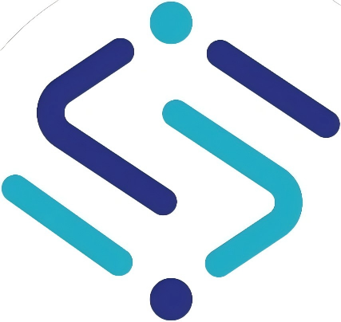

Top 16 Nationally (in high school)
Top 16 Nationally (in high school) Rank S after 1,600 hours (in undergraduate)
Rank S after 1,600 hours (in undergraduate) Immortal I after 300 hours (in graduate)
Immortal I after 300 hours (in graduate)Object Detection
Reliable detection across object scales and challenging visual conditions.
CS/AI Ph.D. Candidate
Object Detection
Semi-Supervised Learning
Open-Vocabulary Visual Recognition
Medical Image Analysis
Hi! I’m Yi Zhang (张懿), a CS/AI Ph.D. candidate at Nanjing University, advised by Assoc. Prof. Shuo Chen. Previously, I began my research journey at Sichuan University, where I received my M.Eng. in Artificial Intelligence under the supervision of Full Prof. Haixian Zhang, followed by a wonderful research internship at A*STAR IHPC (now IAIC). My research interests are:
Reliable detection across object scales and challenging visual conditions.
Learning robust visual models from limited labels and abundant unlabeled data.
Recognizing and localizing concepts beyond fixed training categories.
Applying computer vision to clinically meaningful image understanding.
Currently, I am conducting research on semi-supervised learning for real-time DETRs and participating in AIC 2026 "AI + Steel" Plate Surface Defect Detection Track.
✨ I welcome opportunities for collaboration and thoughtful discussion—feel free to reach out by email.

Doctoral Cohort Representative, 2025 Intake,(* indicates equal contribution)
(* indicates equal contribution)
Developed in collaboration with West China Hospital's Colorectal Cancer Center for full-cycle lymph node metastasis analysis in abdominopelvic cancers, including:
⭐ Thanks to Chief Physician Ziqiang Wang, Associate Chief Physician Mingtian Wei, Attending Physician Xuyang Yang. 💐 Special thanks to Dr. Hao Huang.
An integrated platform for large-scale medical image management, visualization, and annotation.


你好！我是张懿，目前是南京大学计算机科学与技术/人工智能方向博士生， 导师为陈硕副教授。 此前，我在四川大学攻读人工智能硕士学位， 导师为张海仙教授， 随后，我在新加坡科技研究局（A*STAR）高性能计算研究所（IHPC， 现为先进智能与计算研究所（IAIC））任研究实习生。我的研究兴趣有：
面向不同目标尺度与复杂视觉环境的可靠检测方法。
利用少量标注数据与大量无标注数据学习稳健的视觉模型。
识别并定位固定训练类别之外的视觉概念。
将计算机视觉方法应用于具有临床意义的医学影像理解。
目前，我正在开展面向实时 DETR 的半监督学习研究，并参加 AIC 2026 竞赛。
✨ 欢迎合作与交流，可以通过电子邮件联系我。
（* 表示同等贡献）
（* 表示同等贡献）